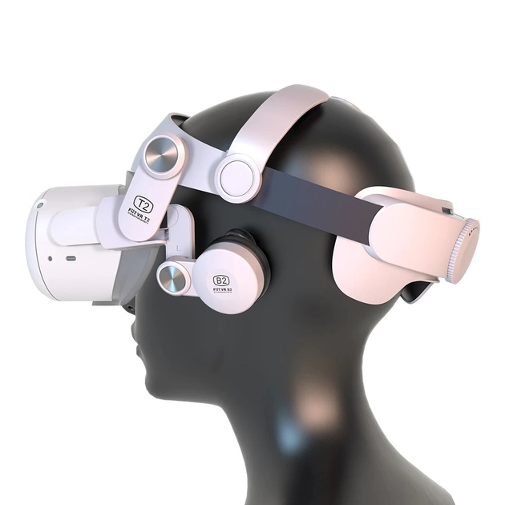
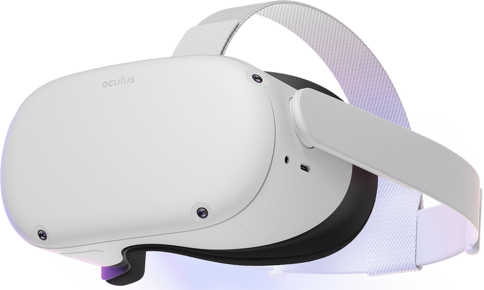
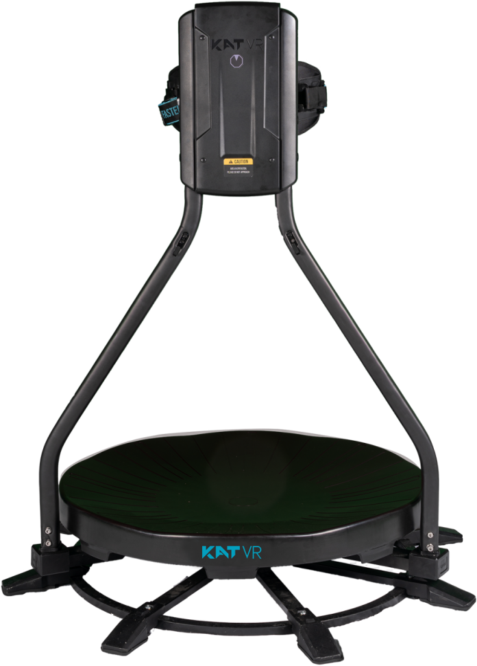
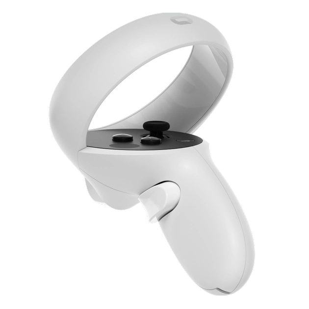

Username

Username
Віртуальна реальність (VR) – це технологія, що створює іммерсивне враження присутності у віртуальному середовищі, яке може бути симуляцією реального світу або фантастичним оточенням. Вона дає користувачам можливість взаємодіяти з цим середовищем у реальному часі за допомогою спеціальних пристроїв.
Технології віртуальної реальності включають такі компоненти:
VR-пристрої – існує кілька типів VR-пристроїв, включаючи навушники VR (VR headsets) і шоломи, які надіваються на голову користувача. Вони забезпечують візуальний і аудіальний вхід у віртуальне середовище, перекриваючи зорове та слухове сприйняття користувача.
Сенсорні контролери – це пристрої, які користувач тримає у руках для взаємодії з віртуальним середовищем. Вони можуть мати кнопки, джойстики або сенсори руху, які дозволяють користувачу взаємодіяти з об'єктами в VR-середовищі.
Рухове відстеження – Деякі VR-системи використовують сенсори, що відстежують рухи тіла користувача. Це дозволяє відтворити рухи користувача віртуальному персонажу або об'єкту, створюючи відчуття повноцінного присутності у віртуальному світі.
Haptic Feedback (тацький відгук) – це технологія, що дозволяє VR-пристроям передавати тактильні відчуття користувачеві під час взаємодії з віртуальним середовищем. Це робить віртуальний досвід більш іммерсивним та реалістичним.
VR-пристрої дозволяють користувачам іммерсивно погрузитися у віртуальні світи та взаємодіяти з ними. Основні типи VR-пристроїв включають:
Навушники VR (VR Headsets): Це найпоширеніший тип VR-пристроїв. Навушники VR забезпечують візуальну і аудіальну іммерсію, використовуючи вбудовані дисплеї та звукові системи. Користувач надіває навушники на голову, що дозволяє отримувати тривимірні зображення і звук у віртуальному середовищі.
Навушники для віртуальної реальності
Шоломи VR (VR Helmets): Це більш розширений тип VR-пристроїв, які зазвичай включають в себе навушники, дисплей та системи відстеження руху. Шоломи VR можуть мати додаткові функції, такі як камери для відстеження зовнішнього середовища або контролери для взаємодії з віртуальним світом.
Шолом VR (VR Helmets)
VR-платформи: Деякі VR-пристрої можуть бути вбудовані у спеціальні платформи, які дозволяють користувачам вільно рухатися у віртуальному середовищі. Це можуть бути стаціонарні платформи з вільним переміщенням або портативні платформи, такі як бездротові VR-шоломи з контролерами руху.
VR-платформа
Сенсорні контролери: Багато VR-пристроїв включають сенсорні контролери, які дозволяють користувачам взаємодіяти з віртуальним середовищем. Ці контролери можуть мати кнопки, джойстики, сенсори руху та інші елементи керування, що дозволяють виконувати дії і маніпулювати об'єктами у віртуальному світі.
Сенсорний контролер
Деякі VR-пристрої мають системи рухового відстеження, які відстежують рухи користувача і передають їх у віртуальне середовище. Це дозволяє користувачам виконувати натуральні рухи, такі як ходьба, біг, руками та головою.